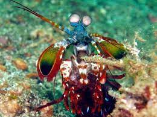
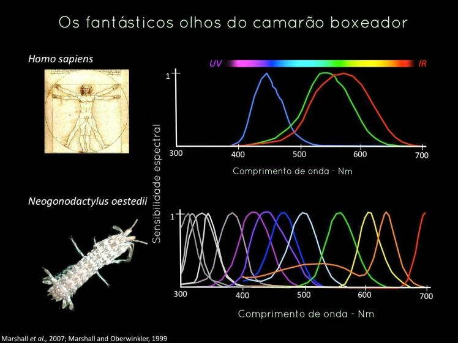
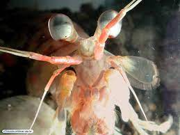

A lagosta-boxeadora
Odontodactylus scyllarus vive em tocas que constrói nos fundos dos corais, ou através de buracos deixados por outros animais, em rochas e substratos próximos de corais de recifes a cerca de 40 metros de profundidade
A visão do Stomatopoda
Os Stomatopodas possuem a visão mais complexa já evoluída no mundo animal. Por exemplo, cada olho do mantis se move de forma independente do outro. Além disso, eles podem detectar luz visível, ultravioleta e polarizada, enxergar em 3D e até ver câncer. Sem brincadeira – existe uma tecnologia de detecção da doença baseada nessa característica biológica do mantis.
Ataque perfurador
Devido a uma diferença anatômica de seus apêndices, o Camarão Mantis pode ser classificado em dois grupos: os que têm ataque perfurador (spearers) e esmagador (smashers). Com isso, os esmagadores são considerados um dos animais mais fortes e velozes do planeta, por terem um ataque rápido como uma bala e forte como um touro.